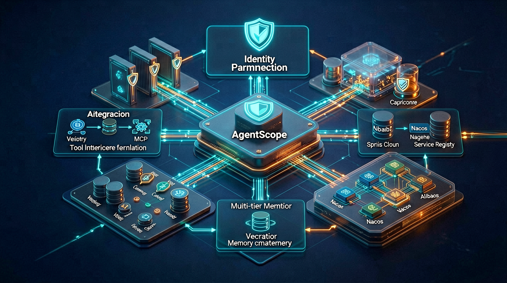
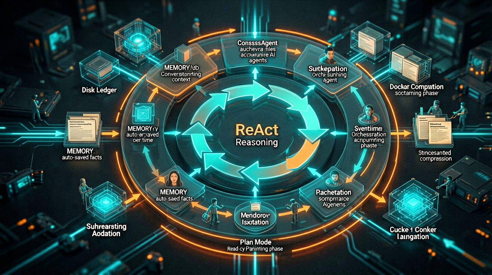
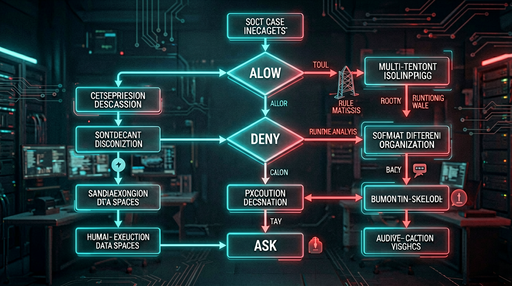

AgentScope Java v2 + Spring Cloud Alibaba 构建的企业级 Agent 平台架构全景
企业 AI 落地，模型能力早已不是瓶颈，工程化才是。一个能跑 demo 的 Agent，放到生产环境立刻暴露一堆问题：多租户的数据怎么隔离？Agent 调工具的权限谁来管？长会话的上下文怎么不爆？滚动发布时在途会话怎么办？Agent 是有状态的，怎么水平扩展？
这些问题单独看都有解法，但攒到一起就是一座冰山。AgentScope Java v2 正是为这座冰山而生--它从"构建一个智能体"的工具箱，升级为面向生产环境运行智能体的完整平台。本文以 AgentScope Java v2 为核心，结合 SpringBoot 与 Spring Cloud Alibaba，用 HarnessAgent 把身份权限、MCP/Skill 工具、上下文记忆、安全沙箱、高可用性能全部串起来，全方位拆解企业级 Agent 平台的落地方案。
一、企业级 Agent 平台的五座大山
裸的 ReAct 循环只解决"一次推理"：请求进来，模型思考，调工具，返回结果。这在 demo 里完美运行，但企业生产环境要面对的是完全不同的问题域。
多租户隔离
不同租户的 Agent 状态、记忆、工作区文件必须严格隔离。A 租户的 Agent 不能看到 B 租户的数据，更不能调 B 租户的工具。session / user / agent / org 四个维度的隔离缺一不可。
工具调用安全
Agent 能调 API、能执行代码、能读写文件。谁来拦？拦什么？敏感操作要不要人工审批？审批后能不能记住规则下次自动放行？这套权限闸门不能是外挂，必须是框架内生能力。
长会话上下文
对话越长，prompt 越大，token 成本和推理延迟都飙升。超过模型上下文窗口直接报错。有价值的事实要能自动沉淀，无用的要能压缩丢弃，模型溢出时要有兜底重试。
状态持久化
Agent 是有状态的：工作区文件、记忆、技能、计划、沙箱快照。滚动发布时在途会话怎么办？进程崩溃后怎么恢复？同一个 (userId, sessionId) 在任意副本上都要能恢复完整上下文。
水平扩展
单机跑不了几万个 Agent。必须无状态化--把状态全部外置到分布式存储，Agent 进程本身变成可随意扩缩的无状态计算单元。这要求框架从设计层面就面向分布式。
这五个问题，每一个都足以让一个"能跑 demo"的 Agent 项目在生产环境翻车。AgentScope Java v2 的价值，在于它把这五个问题的解法打包成了框架内建能力，而不是留给开发者自己拼装。
二、AgentScope Java v2 三大支柱
AgentScope Java 2.0 围绕三大主题展开，每一部分对应一组具体要解决的问题。理解这三个支柱，就理解了整个平台的设计哲学。
Pillar 1
Harness 工程化
长期运行、复杂任务的工程底座。核心推理循环原样保留，能力按需叠加：技能仓库自动沉淀成功模式、三层记忆管理控制 prompt 体量、子智能体编排委派任务、上下文自动压缩、Workspace 以磁盘 Markdown/JSON 表达一切。让智能体稳定长跑、能力越用越强。
Pillar 2
企业级分布式部署
面向多租户、安全运行、零停机发布。RuntimeContext 的键贯穿工作区路径、KV 命名空间、沙箱状态槽，实现 session/user/agent/org 四维隔离。AgentStateStore 支撑任意副本恢复任意用户完整上下文。权限闸门 + 多维隔离把每个租户数据严格分开。
Pillar 3
底层框架升级
更轻、更正交的核心抽象。事件流式输出让每一步都以类型化事件流出；Middleware 取代松散 Hook，五个阶段各居其层；HITL 成为一等公民，可在执行中确认工具参数、审批敏感操作；ContentBlock 统一收敛文本、文件、图片、音视频、工具结果。
三个支柱不是并列的功能列表，而是层层递进的工程逻辑：底层框架升级让核心抽象更干净，Harness 工程化让单个 Agent 能长期稳定运行，企业级分布式部署让多个 Agent 能安全地服务多租户。接下来逐层拆解。
三、HarnessAgent 工程化底座全拆解
HarnessAgent 是 ReActAgent 的一层薄包装，把长期运行 Agent 必备的工程能力打包进单一 builder。理解 Harness 只需要记住三件事：能力是叠加在推理循环关键时机上的，不是改写循环；能力之间互不依赖，只通过共享对象通信；内置 middleware 注册顺序固定，自定义 middleware 跑在最前面。
Workspace 工程底座
人格、知识、技能、子 Agent 规格、会话日志全部以磁盘 Markdown / JSON 表达，每轮自动注入 system prompt。workspace/skills/ 存放沉淀的技能，workspace/subagents/ 存放子 Agent 规格，workspace/plans/ 存放计划文件。工作区路径由 RuntimeContext 驱动，天然实现多租户隔离。
三层记忆管理
第一层：上下文对话，即当前会话的消息序列。第二层：Agent 自维护的 MEMORY.md，有价值的事实自动沉淀。第三层：磁盘事实流水账，持久化到外部存储。自动压缩控制 prompt 体量，memory_* 工具提供显式回忆。
上下文自动压缩
结构化压缩保留 目标 / 状态 / 关键发现 / 下一步；超大工具结果（超 80K 字符）落盘只留占位符；ContextOverflow 兜底重试是最后防线。三层防线确保长会话不会因为 prompt 溢出而崩溃。
子智能体编排
在 Markdown 里声明子 Agent 规格，运行时按需 agent_spawn / agent_send，支持同步与后台委派。后台终态经 system-reminder 反向推送，无需轮询。子 Agent 有独立的工作区和记忆，天然隔离。
自进化与技能仓库
成功模式以 Markdown 技能自动沉淀到 workspace/skills/，每轮按需加载、跨会话共享。技能仓库支持 Git / MySQL / PostgreSQL / Nacos 多种存储后端，know-how 在每次运行之间累积。
计划模式（Plan Mode）
只读规划态编排长任务；计划文件持久化到 workspace/plans/ 并驱动执行，让意图与动作解耦。先规划再执行，避免 ReAct 循环在复杂任务中迷失方向。
下面是用 HarnessAgent 构建企业级 Agent 的代码骨架。Maven 依赖引入核心包和扩展模块：
<!-- pom.xml -->
<dependency>
<groupId>io.agentscope</groupId>
<artifactId>agentscope-core</artifactId>
<version>2.0.0</version>
</dependency>
<dependency>
<groupId>io.agentscope</groupId>
<artifactId>agentscope-harness</artifactId>
<version>2.0.0</version>
</dependency>
<!-- 模型扩展：OpenAI 兼容（含 DeepSeek/GLM/Kimi） -->
<dependency>
<groupId>io.agentscope</groupId>
<artifactId>agentscope-extensions-model-openai</artifactId>
<version>2.0.0</version>
</dependency>
<!-- 分布式状态存储：Redis -->
<dependency>
<groupId>io.agentscope</groupId>
<artifactId>agentscope-extensions-state-redis</artifactId>
<version>2.0.0</version>
</dependency>
HarnessAgent 的构建采用 Builder 模式，能力按需开启：
// HarnessAgent 构建骨架
HarnessAgent agent = HarnessAgent.builder()
.model(ModelFactory.create("deepseek:deepseek-chat"))
// Workspace：人格、知识、技能、子Agent规格全部以文件表达
.workspace(Paths.get("workspaces", orgId, userId))
// 状态存储：Redis，支撑无状态水平扩展
.stateStore(new RedisStateStore(redisConfig))
// 三层记忆：自动沉淀 + 自动压缩
.memory(MemoryConfig.builder()
.autoCompress(true)
.maxContextTokens(80000)
.build())
// 上下文压缩：结构化压缩 + 大结果落盘
.compaction(CompactionConfig.builder()
.threshold(60000)
.strategy(CompactionStrategy.STRUCTURED)
.build())
// 沙箱：Docker 隔离执行
.filesystem(new DockerFilesystemSpec(dockerConfig))
// 权限系统：三态决策
.permission(PermissionConfig.builder()
.mode(PermissionMode.EXPLORE)
.build())
// 子Agent：最多3个并发
.subagent(SubagentConfig.builder()
.maxConcurrent(3)
.build())
.build();
关键设计：HarnessAgent 的所有能力都是可选叠加的。不配 memory 就没有长期记忆，不配 filesystem 就用本地文件系统，不配 permission 就不做权限拦截。框架不会因为你不需要某个能力而强加开销。这种"能力按需叠加"的设计，让同一个 Builder 既能跑轻量级 demo，也能撑起生产级平台。
四、身份与权限体系：从功能到数据
企业级 Agent 平台的安全核心，是控制 Agent 能做什么、能看什么。AgentScope Java v2 的权限系统（io.agentscope.core.permission）拦截 Agent 的每一次工具调用，给出三种决策之一：允许（ALLOW）执行、拒绝（DENY）执行、或者询问用户（ASK）确认。
权限系统把静态配置与动态运行时分析组合起来，三个组件共同决定结果：
Rules
针对每个 tool 与命令的显式 allow / deny / ask 模式，最高优先级。可在配置阶段静态预置，也可在 ASK 提示中由用户接受建议规则而动态加入。
Mode
全局静态策略。EXPLORE 让 Agent 进入只读模式；DONT_ASK 静默拒绝未命中规则的调用。决定所有不命中规则的调用的默认行为。
Built-in Checks
由 tool 自身在运行时基于真实输入做的动态分析。运行时检查而非预配置模式，不可绕过，不受 mode 或 rules 覆盖。
决策流程是层层过滤：先查 Deny Rules，命中则直接拒绝；再查 Ask Rules，命中则询问用户；接着跑 Tool-Specific Checks（EXPLORE 模式下的写操作自动拒绝、危险路径自动询问）；最后查 Allow Rules，命中则放行；都不命中则走 Mode 默认策略。
下面是权限规则的实际配置：
// 权限规则配置
PermissionContextState permission = PermissionContextState.builder()
.mode(PermissionMode.EXPLORE) // 默认只读模式
.rules(List.of(
// 禁止写入系统目录
Rule.deny("filesystem", "write", "/etc/**", "/root/**"),
// 删除操作需人工确认
Rule.ask("shell", "exec", "rm **", "rmdir **"),
// 允许读取工作区
Rule.allow("filesystem", "read", "/workspace/**"),
// 允许调用内部API（仅GET）
Rule.allow("http", "get", "https://api.internal/**"),
// 写数据库需人工确认
Rule.ask("sql", "write", "**")
))
.build();
权限系统不仅管功能权限（能不能调某个工具），还要管数据权限（能看哪些数据）。数据权限通过 RuntimeContext 注入，Agent 的所有工具调用都携带租户上下文：
// 多租户上下文 + 数据权限注入
@RestController
@RequestMapping("/api/agent")
public class AgentController {
@PostMapping("/chat")
public SseEmitter chat(@RequestBody ChatRequest request,
@RequestHeader("X-User-Id") String userId,
@RequestHeader("X-Org-Id") String orgId,
@RequestHeader("X-Role") String role) {
// 构建租户隔离的运行时上下文
RuntimeContext ctx = RuntimeContext.builder()
.userId(userId)
.sessionId(request.getSessionId())
.extra("orgId", orgId)
.extra("role", role)
.extra("dataScope", dataScopeService.getScope(orgId, role))
.build();
// Agent 在此 ctx 下运行，所有工具调用自动携带租户隔离信息
return agentService.streamChat(ctx, request.getMessage());
}
}
RuntimeContext 的键贯穿整个调用链：工作区路径是 workspaces/{orgId}/{userId}/，KV 命名空间是 {orgId}:{userId}:{sessionId}，沙箱状态槽也按同样的键隔离。Agent 执行 SQL 查询时，数据权限拦截器会自动追加 WHERE org_id = ? 条件，确保 Agent 只能看到当前租户的数据。
| 权限维度 | 控制对象 | 实现方式 | 典型场景 |
|---|
| 功能权限 | 工具调用 | Rules + Mode + Built-in Checks | 禁止 Agent 执行 rm 命令 |
| 数据权限 | 数据可见范围 | RuntimeContext + 数据拦截器 | Agent 只能查本租户订单 |
| 操作权限 | 敏感操作审批 | ASK + HITL | 写数据库前人工确认 |
| 资源权限 | 配额限制 | Spring Cloud Sentinel 限流 | 单租户每分钟最多 100 次调用 |
ASK 的自学习能力：当权限系统返回 ASK 时，会附带一条自动生成的建议规则。用户一旦接受，将来相同的调用便会被自动处理，不再询问。这意味着权限系统会随着使用越来越智能--第一次需要确认的操作，确认后就变成了允许规则。这是"安全"与"效率"的优雅平衡。
五、工具生态：MCP + Skill 双引擎

HarnessAgent 的六大工程能力：Workspace、三层记忆、上下文压缩、子智能体、技能仓库、计划模式
Agent 的能力边界由工具决定。AgentScope Java v2 提供两条工具接入路径：MCP（Model Context Protocol）用于接入外部标准化工具服务，Skill用于沉淀和复用 Agent 自身积累的能力。两者互补，构成企业级 Agent 的工具双引擎。
MCP：标准化工具接入
MCP 是 Anthropic 提出的模型上下文协议，让 Agent 以标准方式接入外部工具服务。AgentScope Java v2 内建 MCP 客户端，只需配置服务端地址和认证信息，Agent 就能自动发现并调用 MCP 服务端暴露的所有工具。
// 注册 MCP 服务端工具
McpToolSpec mcpTools = McpToolSpec.builder()
.server("database", McpServer.builder()
.url("http://db-mcp:8080/sse")
.authToken(dbServiceToken)
.build())
.server("search", McpServer.builder()
.url("http://search-mcp:8080/sse")
.build())
.server("erp", McpServer.builder()
.url("http://erp-mcp:8080/sse")
.authToken(erpToken)
.build())
.build();
HarnessAgent agent = HarnessAgent.builder()
.model(model)
.tools(mcpTools) // MCP 工具自动注入
.permission(permissionConfig)
.build();
MCP 的价值在于解耦：工具服务独立部署、独立升级、独立扩缩，Agent 只需知道 MCP 服务端地址。企业内部可以把数据库查询、搜索引擎、ERP 接口、邮件系统各封装成 MCP 服务端，Agent 通过统一协议接入，不用为每个工具写适配代码。
Skill：能力沉淀与复用
Skill 是 AgentScope 独有的能力沉淀机制。Agent 在执行任务过程中，如果发现了可复用的成功模式，会自动以 Markdown 格式沉淀到 workspace/skills/ 目录。下次遇到类似任务时，Agent 会按需加载相关技能，跳过摸索阶段。
// 技能仓库配置：MySQL 存储，支撑多副本共享
AgentSkillRepository skillRepo = new MysqlSkillRepository(dataSource);
HarnessAgent agent = HarnessAgent.builder()
.model(model)
.skillRepository(skillRepo)
.workspace(Paths.get("workspaces", orgId, userId))
.build();
// 技能文件示例：workspace/skills/query-order-by-status.md
// 当用户询问订单状态时：
// 1. 先用 MCP database 工具查询 orders 表
// 2. WHERE 条件必须包含 org_id（从 RuntimeContext 获取）
// 3. 返回结果按 created_at DESC 排序
// 4. 如果结果超过 20 条，提示用户缩小范围
技能仓库支持四种存储后端，适配不同部署场景：
| 存储后端 | 适用场景 | 多副本共享 | 版本管理 |
|---|
| 本地文件系统 | 单机开发调试 | 不支持 | 手动 |
| Git 仓库 | 团队协作、技能审计 | 支持（pull/push） | 原生 Git |
| MySQL / PostgreSQL | 生产多副本部署 | 支持（共享DB） | 应用层 |
| Nacos | Spring Cloud 生态集成 | 支持（配置中心） | Nacos 版本 |
MCP 与 Skill 的分工：MCP 解决"接入"问题--把外部系统变成 Agent 可调用的工具；Skill 解决"沉淀"问题--把 Agent 的成功经验变成可复用的知识。MCP 是横向的，一个 MCP 服务端可以被所有 Agent 共享；Skill 是纵向的，每个 Agent 积累自己的技能，也可以通过共享仓库在团队间流通。两者配合，Agent 的能力边界随时间持续扩展。
六、上下文与记忆管理
长会话是 Agent 生产环境的头号杀手。对话越长，上下文越大，直到超过模型窗口直接报错。AgentScope Java v2 用三层防线解决这个问题：自动压缩、大结果落盘、溢出兜底重试。
三层记忆架构
记忆不是单一的存储，而是分层的。AgentScope 的三层记忆各有分工：
| 层级 | 存储位置 | 内容 | 生命周期 | 压缩策略 |
|---|
| 上下文对话 | 内存 + AgentStateStore | 当前会话的完整消息序列 | 会话级 | 结构化压缩（保留目标/状态/发现/下一步） |
| MEMORY.md | Workspace 文件 | Agent 自维护的关键事实 | 跨会话 | Agent 自主决定写入和更新 |
| 事实流水账 | 外部持久化存储 | 所有交互的结构化日志 | 永久 | 不压缩，按需检索 |
上下文压缩不是简单的截断。结构化压缩会提取四个关键要素：目标（用户要什么）、状态（当前进展）、关键发现（已经查明的事实）、下一步（接下来做什么）。压缩后的上下文让 Agent 不会丢失任务方向，只丢弃冗余的中间过程。
大工具结果落盘
Agent 调用工具时，返回结果可能很大--一次数据库查询返回几千行，一次文件读取返回几十万字符。这些结果直接塞进上下文会迅速撑爆 prompt。AgentScope 的做法是：超过 80K 字符的工具结果自动落盘，上下文里只保留一个占位符引用。Agent 需要时可以通过 memory_recall 工具显式回忆。
// 记忆与压缩配置
MemoryConfig memoryConfig = MemoryConfig.builder()
// 长期记忆：接入 Mem0 或百炼记忆
.longTermMemory(new Mem0MemoryProvider(mem0Config))
// 自动压缩开启
.autoCompress(true)
// 上下文 token 上限：80K（预留窗口余量）
.maxContextTokens(80000)
// 压缩策略：结构化压缩
.compactionStrategy(CompactionStrategy.STRUCTURED)
// 大结果落盘阈值：80K 字符
.toolResultEvictionThreshold(80000)
.build();
ContextOverflow 兜底
即使有压缩和落盘，极端情况下上下文仍可能溢出（比如模型突然改变了 token 计算方式）。AgentScope 的最后一道防线是 ContextOverflow 兜底重试：捕获溢出异常，强制压缩上下文到安全水位，然后重试。这保证了 Agent 不会因为上下文问题而直接崩溃。
记忆 vs 缓存的区别：记忆不是简单的 KV 缓存。MEMORY.md 是 Agent 自主维护的--它自己决定哪些事实值得记住、哪些可以遗忘。这种"自主记忆"让 Agent 具备了类似人类的遗忘曲线：常用的事实保持新鲜，不用的逐渐淡出。而事实流水账则是对话的完整审计日志，用于回溯和合规，不参与推理。
七、安全沙箱与可控执行

权限三态决策流程 + 沙箱隔离执行 + 多租户数据隔离的安全体系
Agent 执行代码和命令时，安全是底线。AgentScope Java v2 的沙箱机制把工具执行限定在隔离环境内，支持三种隔离级别：本地子进程、Docker 容器、远端 AgentRun。企业生产环境推荐 Docker 或 K8s 沙箱。
// Docker 沙箱配置
DockerFilesystemSpec sandbox = DockerFilesystemSpec.builder()
.image("agentscope/sandbox-java:17")
.memoryLimit("512m")
.cpuLimit("0.5")
.networkMode("none") // 禁止网络访问
.readOnlyRoot(true) // 根文件系统只读
.tmpfs("/tmp", "64m") // 临时目录
.volume("/workspace", workspacePath) // 挂载工作区
.build();
沙箱的核心能力不仅是隔离，还有快照与恢复。长任务执行到一半时，沙箱状态可以快照保存到 AgentStateStore。进程重启后，从快照恢复沙箱状态，长任务继续执行。这是"优雅上下线"的关键--滚动发布不会丢失在途任务的执行进度。
沙箱隔离加上权限系统，构成了 Agent 执行的双重安全网：
| 安全层 | 防护对象 | 机制 | 恢复能力 |
|---|
| 权限系统 | 工具调用决策 | Rules + Mode + Built-in Checks | ASK 规则自学习 |
| 沙箱隔离 | 代码执行环境 | Docker / K8s 容器隔离 | 快照恢复 |
| HITL | 敏感操作审批 | 暂停-确认-恢复 | 精确恢复到暂停点 |
| 多租户隔离 | 数据安全 | RuntimeContext 四维键 | 跨副本状态恢复 |
HITL（Human-in-the-Loop）是 AgentScope 2.0 的一等公民。当权限系统返回 ASK 时，Agent 在暂停点等待人工确认。确认后精确恢复执行，不需要重新推理。这意味着敏感操作的审批不会打断 Agent 的工作流，只是插入了一个检查点。
八、Spring Cloud Alibaba 集成落地
AgentScope Java v2 是 Agent 框架，不是微服务框架。企业级部署需要服务注册发现、配置管理、流量控制、网关路由--这些正是 Spring Cloud Alibaba 的主场。两者的结合点是：AgentScope 负责智能体运行时，Spring Cloud Alibaba 负责基础设施治理。
整体架构分层
接入层 - Higress AI 网关
Higress 作为 AI 网关，负责 协议转换（HTTP/SSE 到 AG-UI）、身份认证（JWT/OAuth2）、流量路由（按租户路由到不同 Agent 副本）。AgentScope 内建 Higress 集成，网关层天然支持 AG-UI 协议。
服务层 - Agent 微服务集群
Agent 服务注册到 Nacos，按租户分组。每个 Agent 实例是无状态的，状态全部外置到 Redis/MySQL。Spring Cloud Sentinel 做限流熔断，单租户超限自动降级。实例可随意扩缩，不影响在途会话。
状态层 - 分布式存储
Redis：AgentStateStore + 并发锁 + 沙箱快照。MySQL：技能仓库 + 事实流水账 + 会话审计。OSS：大工具结果落盘 + 工作区文件备份。AgentScope 的 DistributedStore 一键配置全链路分布式存储。
工具层 - MCP 服务集群
每个 MCP 服务端是一个独立的 SpringBoot 微服务，注册到 Nacos。Agent 通过 MCP 协议自动发现工具。工具服务独立扩缩、独立升级，与 Agent 解耦。
治理层 - Nacos + Sentinel + Scheduler
Nacos：配置中心 + 服务发现 + 技能仓库。Sentinel：限流熔断 + 热点参数限流。Scheduler（Quartz/XXL-Job）：定时任务调度，如定期压缩记忆、清理过期会话。
Spring Boot 应用的配置文件：
# application.yml
spring:
application:
name: enterprise-agent-platform
cloud:
nacos:
discovery:
server-addr: nacos:8848
namespace: agent-prod
group: AGENT_GROUP
config:
server-addr: nacos:8848
file-extension: yaml
namespace: agent-prod
sentinel:
transport:
dashboard: sentinel:8080
datasource:
flow:
nacos:
server-addr: nacos:8848
dataId: agent-flow-rules
ruleType: flow
# AgentScope 分布式存储配置
agentscope:
state-store:
type: redis
redis:
host: redis-cluster
port: 6379
skill-repository:
type: nacos
nacos:
server-addr: nacos:8848
group: SKILL_GROUP
sandbox:
type: docker
docker:
host: tcp://docker-host:2375
image: agentscope/sandbox-java:17
Agent 服务的 Spring Boot 启动类和 Bean 配置：
@SpringBootApplication
@EnableDiscoveryClient
@EnableSentinel
public class AgentApplication {
public static void main(String[] args) {
SpringApplication.run(AgentApplication.class, args);
}
@Bean
public AgentStateStore agentStateStore(
@Value("${agentscope.state-store.redis.host}") String host) {
// Redis 状态存储：支撑无状态水平扩展
return new RedisStateStore(RedisConfig.builder()
.host(host).port(6379).build());
}
@Bean
public AgentSkillRepository skillRepository(NacosConfigManager nacosManager) {
// Nacos 技能仓库：配置中心即技能中心
return new NacosSkillRepository(nacosManager);
}
}
九、高可用与性能保障
企业级平台的高可用不是靠某个单一机制，而是多个层次的冗余和兜底共同构成的。AgentScope Java v2 + Spring Cloud Alibaba 的高可用体系覆盖四个维度：
HA-1
无状态水平扩展
Agent 状态全部外置到 AgentStateStore（Redis/MySQL/OSS）。任意副本都能恢复任意用户的完整上下文。Nacos 服务发现 + Spring Cloud LoadBalancer 自动路由。扩容只需加实例，缩容只需摘流量。
HA-2
零停机滚动发布
在途会话不被打断：旧实例优雅关闭前，把在途 Agent 状态持久化到 AgentStateStore；新实例启动后，从 Store 恢复继续。同一个 (userId, sessionId) 在任意副本上都能无缝衔接。
HA-3
限流熔断降级
Sentinel 按 orgId 做热点参数限流，单租户突发流量不拖垮全平台。模型调用超时自动熔断，降级到缓存结果或更小的模型。MCP 工具调用失败自动重试，重试次数可配。
HA-4
事件流式输出
每一步--模型调用、文本增量、工具执行、工具结果--都以类型化事件流出。前端 SSE 实时跟上，用户体验不卡顿。即使模型推理需要 30 秒，用户也能看到每一步进展。
性能优化的关键指标和对应手段：
| 性能指标 | 瓶颈点 | 优化手段 | AgentScope 能力 |
|---|
| 首 token 延迟 | 模型推理启动 | 流式输出 + 连接预热 | 事件流式原生支持 |
| 上下文 token 消耗 | 长会话 prompt 膨胀 | 结构化压缩 + 大结果落盘 | 自动压缩 + toolResultEviction |
| 工具调用延迟 | MCP 服务响应慢 | 并行调用 + 结果缓存 | 子Agent并发 + memory_recall |
| 状态恢复延迟 | AgentStateStore 读取 | Redis 热缓存 + MySQL 冷存储 | 多层 StateStore 混合后端 |
| 并发吞吐 | 单实例 Agent 数上限 | 无状态化 + 水平扩展 | RuntimeContext 隔离 |
DistributedStore 一键配置：AgentScope 2.0 的 DistributedStore 把 Agent 状态、工作区文件系统、沙箱快照、并发锁全部收敛到一个配置入口。选择 Redis 后端，就自动获得 AgentStateStore + BaseStore + SandboxSnapshotSpec + SandboxExecutionGuard 四个能力。混合后端也支持--状态用 Redis（快），文件用 OSS（便宜），沙箱快照用 MySQL（可审计）。
十、场景应用：三个真实落地案例
架构设计最终要落到场景。下面是三个典型企业场景，展示 AgentScope + Spring Cloud Alibaba 的实际应用模式。
场景一：智能客服
多租户客服 Agent 平台
SaaS 客服平台，每个租户有独立的 人格配置、知识库和工具集。Agent 通过 RAG 检索租户知识库，通过 MCP 调用租户的 CRM/ERP 系统。权限系统确保 Agent 只能查本租户数据，敏感操作（如退款、改单）走 HITL 人工确认。技能仓库让 Agent 积累每个租户特有的处理模式。
关键能力：多租户隔离 + RAG + MCP + HITL + 技能沉淀
场景二：研发助手
代码生成与审查 Agent
内部研发平台，Agent 帮助开发者写代码、跑测试、做 Code Review。沙箱执行用户提交的代码，Docker 隔离防注入。子 Agent 编排：主 Agent 拆任务，子 Agent 分别做代码生成、测试编写、安全扫描，结果汇总后统一输出。计划模式先规划再执行，避免 ReAct 在复杂任务中跑偏。工作区持久化项目上下文，跨会话保持项目记忆。
关键能力：沙箱隔离 + 子Agent编排 + 计划模式 + Workspace
场景三：数据分析
自助式 BI Agent
业务人员用自然语言提问，Agent 自动生成 SQL、查询数据、生成图表。数据权限通过 RuntimeContext 注入，Agent 生成的 SQL 自动追加 WHERE org_id = ?。MCP 接入数据库服务和图表渲染服务。三层记忆记住用户的查询偏好和常用指标。Sentinel 限流防大查询拖垮数据库。大结果落盘避免上下文爆炸。
关键能力：数据权限 + MCP + 三层记忆 + 限流 + 大结果落盘
十一、上生产检查清单
从 demo 到生产，以下清单覆盖了企业级 Agent 平台上线前必须验证的关键项：
安全与权限
- 权限 Mode 设为 EXPLORE（只读），写操作显式 allow
- 所有删除/修改操作配置 ASK 规则，走 HITL 审批
- RuntimeContext 四维隔离（session/user/agent/org）验证通过
- 数据权限拦截器覆盖所有数据查询路径
- 沙箱网络模式设为 none，根文件系统只读
高可用与性能
- AgentStateStore 配置为 Redis（或 MySQL），非内存模式
- 技能仓库配置为 MySQL/Nacos/Git，非本地文件系统
- Sentinel 限流规则按 orgId 热点参数配置
- 模型调用超时 + 熔断 + 降级策略配置
- 上下文压缩 + 大结果落盘 + ContextOverflow 兜底验证
- 滚动发布测试：在途会话不丢失，状态恢复验证通过
可观测与运维
- 事件流式输出接入监控（每步事件可追踪）
- Middleware 五阶段日志（onAgent/onReasoning/onActing/onModelCall/onSystemPrompt）
- 工具调用审计日志持久化（谁、何时、调了什么、结果）
- Nacos 配置热更新验证（权限规则、模型参数）
- Scheduler 定时任务：记忆压缩 + 过期会话清理 + 技能同步
结语
企业级 Agent 平台的核心挑战从来不是"让 Agent 能跑"，而是"让 Agent 安全、稳定、高效地长期跑"。AgentScope Java v2 用三大支柱回答了这个问题：Harness 工程化让单个 Agent 能长期运行、能力越用越强；企业级分布式部署让多 Agent 能安全服务多租户、零停机发布；底层框架升级让核心抽象更干净、扩展更自然。
Spring Cloud Alibaba 的角色是基础设施治理：Nacos 管配置和发现，Sentinel 管流量和降级，Higress 管网关和协议。AgentScope 负责智能体运行时，Spring Cloud Alibaba 负责基础设施治理，各司其职，通过标准接口对接。这种分层不是技术栈的简单堆叠，而是职责的清晰划分。
从 demo 到生产，差距不在模型能力，而在工程化深度。权限三态决策、三层记忆管理、沙箱快照恢复、无状态水平扩展--每一个都是独立工程课题，AgentScope 把它们收敛到一个 Builder API 里。开发者不需要从零拼装这些能力，只需要理解每个配置项的含义，按场景开启。这才是"企业级"三个字的真正含义：不是功能更多，而是把生产环境的复杂度封装好了。
参考资料
- AgentScope Java v2 官方文档 https://java.agentscope.io/v2/zh/intro.html
- AgentScope 官网 https://agentscope.io/
- AgentScope Java v2 权限系统 https://java.agentscope.io/v2/zh/docs/building-blocks/permission-system.html
- AgentScope Java v2 Harness 架构 https://java.agentscope.io/v2/zh/docs/harness/architecture.html
- AgentScope Java v2 集成总览 https://java.agentscope.io/v2/zh/integration/overview.html
- Spring Cloud Alibaba 官方文档 https://sca.aliyun.com/
- Model Context Protocol 规范 https://modelcontextprotocol.io/